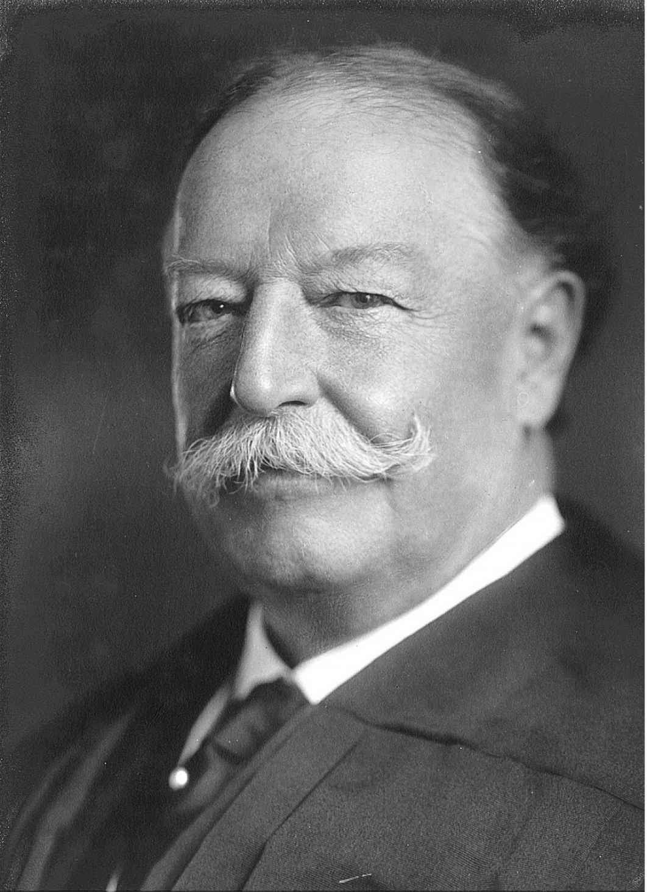
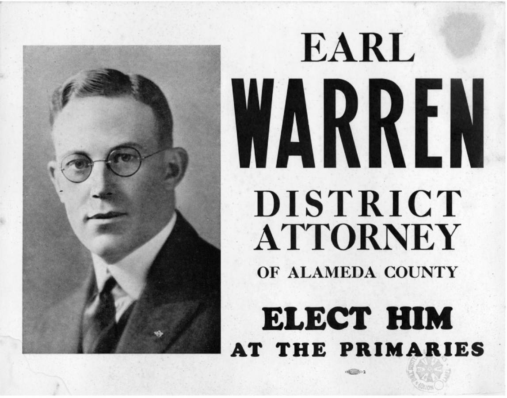

宪法第三条，规定了与司法分支相关的内容，却只字未提首席大法官一职。显然，制宪先贤准备设置这一职位，不过这个意图只能从宪法文本本身推导出来——宪法第一条明确要求由首席大法官主持参议院对总统的弹劾审判。有人事后曾问威廉·伦奎斯特首席大法官如何看待自己1999年在对比尔·克林顿总统的弹劾审判中的作用，他笑着回答：“我其实无所作为，但我表现不错。”
无论制宪先贤当初如何设想，如今已没有人再认为首席大法官无所作为。两百年来，伴随法律发展与传统积淀，这一职位要履行的职责也日渐庞杂。根据2006年一项研究的总结，国会陆续在81条单独的法律条款中赋予首席大法官特定职责或权力。这些职责涵盖的范围甚广，从指导国会图书馆购买法律书籍，到任命11位法官组成特别法庭来批准政府搜集海外情报和开展窃听。 [44] 根据法律，首席大法官是国家艺术馆和史密森学会的董事会成员； [45] 负责主持制定联邦司法政策的美国司法联席会议；负责判定其他大法官是否符合提前退休条件，签署“失权证明”。
首席大法官行使的唯一一项最重要的权力，还是投出决定某起最高法院案件的判决结果的九票中的一票。对第六位首席大法官萨蒙·蔡斯来说，这才是真正要紧的唯一职责。1868年，蔡斯在一封信里写道：“人们对首席大法官的权力有极大的误解，在最高法院，他只是八名法官之一，每个人都享有同等权力。 [46] 他的判断分量并不更重，他的投票也不会比其他弟兄更重要。他主持庭审，还有一些额外的工作会丢给他做。仅此而已。” [47]
即使首席大法官在审判席上仅是平等者之首，要想在21世纪认识这一职位，还是需要对它的权力有更全面的理解。把今天的首席大法官视为首席执行官将更为确切，他既是最高法院的首席主管者，也是整个联邦司法分支的首席主管者。 [48] 通往联邦法院职位的传统职业发展路径，所能为这一全能型职位提供的历练少之又少。上个世纪里，为出任这一岗位准备最为充分者，无疑是第十任首席大法官威廉·霍华德·塔夫脱，他做过美国第二十七任总统。塔夫脱于1921年至1930年间在任，意料之中地，他也是工作最卓有成效的首席大法官之一。
出任首席大法官之前，在最高法院的任职经历也是有效的历练，尽管这样的情况并不常见。17位首席大法官中，只有4位之前担任过联席大法官。其中3人——伦奎斯特、爱德华·道格拉斯·怀特和哈伦·菲斯克·斯通——是在最高法院任内晋升的。（约翰·拉特利奇未被算在这一名单内，乔治·华盛顿提名他出任首席大法官未果，他本人虽通过确认，成为联席大法官，但从未履任。）第四位做过联席大法官的则是查尔斯·埃文斯·休斯。1916年，他为竞选总统，辞去大法官职务。14年后，塔夫脱首席大法官逝世，赫伯特·胡佛选择休斯接任首席大法官一职。
即使进入最高法院前已经过确认，被提名为首席大法官的人，仍需再接受一次单独的参议院确认，并获得新的委任状。作为确认政治的一部分，这项要求也许是为了制约总统直接提拔在任大法官。如威廉·伦奎斯特1986年被里根总统提名晋升时的情形那样，确认程序很容易变成对提名对象在最高法院工作表现的投票表决，以及对最高法院整体发展方向的表决。
我们今天使用的头衔是“美国首席大法官”，这一称呼最开始并不明确。无论是首部《司法法》，还是宪法本身，都没有比“首席大法官”这一称谓更详尽的表达。后来人们开始使用“美国最高法院首席大法官”这一繁冗称谓。1860年代，国会开始使用现在的称谓，梅尔维尔·富勒1888年被委任为首席大法官的委任状上就出现了这一称谓。

图5 威廉·霍华德·塔夫脱首席大法官，摄于1921年他刚履任时。他是唯一一位既当过总统，又做过最高法院大法官的人
很大程度上，是传统，而非法律，指导着首席大法官履行纯粹司法方面的职能。他主持“内部会议”（the Conference），这是最高法院对大法官全体会议的专门称呼。 [49] 如果他在某起案件的投票中位于多数方，则享有指定自己或多数方任何一位大法官撰写判决意见的权力。如果首席大法官位于异议方，则由多数方最资深的大法官负责指定。
最高法院的惯例是，各位大法官在同一开庭期内负责撰写的多数方意见数量大体相同。不过，意见撰写的指派，通常包含大量权衡和策略，并不是单纯按名单轮流指定。这是因为，五位大法官组成多数方推翻或维持下级法院的判决，并不意味着这五个人立场一致，或对判决结果或推导方法的认同程度一致。所以，在投票结果比较接近、多数方的立场可能不太牢固的案件中，相当常见的是，负责指派的大法官——无论他是首席大法官还是联席大法官——会把撰写多数方意见的任务，分派给多数方中立场最不坚定的大法官。分派者希望这位立场摇摆的大法官，能够通过阐释多数方的判决理由来说服自己，进而避免出现最糟糕的结果，即某位大法官被异议方更有说服力的意见所吸引，转投另一方阵营。
尽管如此，上述情况还是偶尔发生。例如，1991年开庭期，就一位神职人员在公立高中毕业典礼上的祈祷行为是否违反宪法关于政教分离的规定，最高法院正反双方的投票结果就十分接近。此前一家联邦上诉法院已判定这种做法违宪，最高法院受理了学区的上诉。庭审之后，大法官们在这起名为“林奇诉唐纳利案”的案件的投票中，以5票对4票决定推翻下级法院判决，宣布神职人员引领下的祈祷仪式合乎宪法规定。 [50] 伦奎斯特首席大法官指派安东尼·肯尼迪大法官撰写多数方意见。在撰写判决意见的那几个月中，肯尼迪发现自己站错了队——这一结论意味着这起案件的结果将彻底扭转。肯尼迪把自己的想法通知了首席大法官和异议方最资深的联席大法官哈里·布莱克门。“推翻高中毕业典礼祈祷案的判决意见写完后，思路看起来完全不对。”他在给布莱克门的信中写道，同时补充说，自己已经重写了意见初稿，维持下级法院关于祈祷行为违宪的判决。这下，轮到布莱克门指派判决意见主笔者了，布莱克门还是选了肯尼迪。于是，肯尼迪继续撰写判决意见，为争取布莱克门和前异议方其他成员的认同，他对内容作了一些调整。几个月后，1992年6月，最高法院发布了5票对4票达成的判决，判定神职人员在公立学校毕业典礼上引领的祈祷仪式违宪。之后12年间，外界并不知道最高法院内发生的这一戏剧性内幕，直到布莱克门捐赠给国会图书馆的文档对外公开。
判决意见主笔者的指派权是首席大法官的一项重要权力资源。同一种结果，判决意见的范围可宽可窄。首席大法官如果想把某种具体学说推向特定方向，或者不想让某种见解上升到特定高度，那么，利用他对自己同事裁判风格和偏好的了解，足以让这项权力充分发挥作用。当然，首席大法官最终与其他大法官一样，手中只握有一票。
除了在四位法官助理协助下处理法院的审判事务，首席大法官也负责管理拥有400名员工的最高法院大楼的运转。最高法院配备了专门警力。还有工作人员负责复杂的文件流转。每周大约有150件新的申诉提交上来，已列入庭审安排的案件也会有稳定数量的诉状提交。这些文件都需要逐项审查，确保其符合诉讼规则的要求。诉状是否在规定时限内提交，是否在规定篇幅内？封皮是否选对了颜色？［诉状的类别决定着封皮颜色，只需要瞥一眼封皮，就能辨明诉状类型：新案件提交的诉状（白色）；赞成维持下级法院判决一方提交的诉状（红色）；“法庭之友”提交的诉状（深绿色或淡绿色，取决于这位“朋友”支持哪一方）。］这些文件每周整理建档后，就会被放进九辆小推车，送往各位大法官的办公室。最高法院书记官［书记官（Clerk）是最高法院的高级管理人员，不要与法官助理（Law Clerk）搞混了］管理这一环节的工作，执法官（Marshal）则负责安保工作。首席大法官同时会配备一名行政助理，作为首席与司法分支内各机构的联络人，承担最高法院内外的重要职责。
联邦法院行政办公室就是上述机构之一。就像它的名称表明的，“行政办公室”是联邦司法管理的中枢机构。首席大法官选任行政办公室主任，后者上任后仍要对首席负责。联邦司法系统拥有1200名终身任职的法官、850名其他类别的法官、30000名雇员，以及近60亿美元的预算，本身就是一个错综复杂的官僚机构，完全处于首席大法官的监督与管理之下。
首席大法官同时是美国司法联席会议主席，这个组织由13个联邦巡回上诉法院的首席法官、各巡回区内一位富有经验的地区法院法官，以及联邦国际贸易法院的首席法官组成。司法联席会议每年在最高法院召开两次，其前身是巡回法院资深法官会议，是塔夫脱首席大法官说服国会授权成立的。成立联席会议的最初目的，是“就改进联邦法院司法工作相关事宜”为首席大法官提供建议。
时至今日，司法联席会议的职能已大为拓展。它的主要职责是由一些委员会来完成的，这些委员会负责制定与联邦法院管辖范围和诉讼程序中的重要因素相关的管理规则。司法联席会议下辖22个委员会，共有约250名成员，这些法律工作者、法官都以能受到首席大法官邀请，为司法联席会议服务为荣。司法联席会议本身时常为争取更多法官员额或为法官增加薪酬等事宜与国会沟通。它也会评价那些将对司法工作产生潜在影响的即将出台的立法。在这项职能上，司法委员会和首席大法官的功能与游说集团的成员颇为类似，即尽可能促成或阻止特定政策出台。
例如，1991年，司法联席会议抵制一项法案，该法案允许性暴力犯罪受害者在联邦法院起诉侵害人并索取赔偿。首席大法官本人在1991年的年度司法报告中，批评这部法案创造了一项“过于宽泛的私人诉讼权利，立法将使联邦法院陷入大量家庭纠纷之中”。三年后，经过修订，这部法案以《防治对妇女施暴法》之名正式发布实施。2000年，首席大法官代表最高法院主笔的多数方意见判定这部法律设定的新索偿措施无效，因为国会没有发布该法的宪法权力。
“联邦司法系统”年度报告是沃伦·伯格首席大法官开创的。1970年，他履任第二年就开始发布这项报告，之后经常会在1月的美国律师协会大会上以演讲形式发布。报告出炉时间与总统发布国情咨文的时间大致相同。伯格的继任者威廉·伦奎斯特不再出面宣读，改为每年新年前夜发布书面报告，约翰·罗伯茨首席大法官沿袭了这一做法。 [51]

图6 厄尔·沃伦是位活跃的政治家，1953年出任首席大法官之前，从来没有过法官经历。这张海报是他早期在加州成功的选举生涯中使用的。他后来三度出任加州州长。
首席大法官承担的绝大部分职责都是公众看不到的，但近年这项发布年度司法报告的传统，强调了首席大法官作为政府第三分支公共代言人的象征角色。是首席大法官作为东道主接待来访的各国宪法法院法官；是首席大法官站在每四年一次的总统就职典礼的中心，主持总统就职宣誓仪式。2005年1月，伦奎斯特首席大法官因患甲状腺癌而病重，已有三个月没出现在公众视野中，但他还是从病床暂时爬起，坚持履行职责，主持了小布什总统的第二任期就职典礼。这也是伦奎斯特最后一次在最高法院外公开露面。他在六个月后逝世，时年80岁，这也是他出任大法官的第33个年头。
人们习惯以时任首席大法官的名字命名某一历史时期的最高法院，但是，17位首席大法官，并非每个人在公众心目中都留下了同等印记。文森法院（首席大法官弗雷德·文森，1946—1953）没能给人们留下什么印象，而紧随其后的沃伦法院（1953—1969）却让公众印象深刻。尽管小威廉·布伦南大法官才是沃伦法院一系列里程碑判决的幕后设计师，但首席大法官沃伦的名字却与那个时代紧密相连，在那一时期，自由派大法官组成的多数方驱动宪法，使之成为社会变革的工具。
“除了履行的职责本身，在任者的影响力取决于他对这些职责的运用以及履责的方式。”一位研究最高法院的学者二三十年前指出，“最终起决定作用的是人的因素，是无形的东西，是个性特征——这个位居核心地位的人散发出来的道德力量。”
做过总统的威廉·霍华德·塔夫脱留下的遗产，之所以比近代任何一位首席大法官都更加不可磨灭，是因为它不仅包括已决先例和那座大理石建筑（最高法院大楼），还包括最高法院控制自己案件量的权力。在塔夫脱首席大法官的努力下，国会在1925年《司法法》中赋予最高法院更宽泛的自主选案权。（这部法律俗称《法官法案》，反映了大法官们在其起草过程中起到很大的作用。）大法官们从此不必再被迫审理所有通过正当途径提交过来的上诉。这部法律对最高法院起到了脱胎换骨的影响。该法生效几个月后，塔夫脱首席大法官在一篇文章里阐述了允许大法官自主选案的重大意义：“设置最高法院的目的，不是为纠正特定诉讼中的某个错误，而是要考虑那些判决结果涉及如下原则的案件，这些原则的应用事关广泛的公共利益或政府利益，并且应当由终审法院来宣布。”他随后列举了最高法院应当关注的案件类型：“涉及联邦和州的法律是否符合联邦宪法的问题；涉及个人宪法权利的实体性问题；可能影响到广大民众利益的联邦法律的解释问题；联邦司法管辖权问题；适用范围广泛，以至于需要最高法院来释疑的法律中不时存在的疑难问题。”
换句话说，最高法院不再是那些败诉当事人提交上来的任何法律争议的被动接受者。它也不再仅仅是司法系统中的最高上诉法院。大法官们将会决定哪些案件——哪些问题——重要到足够吸引他们的注意力，进而吸引整个国家的注意力。新的《司法法》提醒那些试图通过申请“调卷复审令状”（最高法院受理某起案件的指令的专业用语）将官司送到最高法院的人们：“审查调卷复审申请与权利无关，法官对之有充分的司法裁量权，只有具备特别而重要的理由才可能被批准受理。”最高法院从此成为自己命运的主导者，不仅如此，它还设定着这个国家的法律议程。